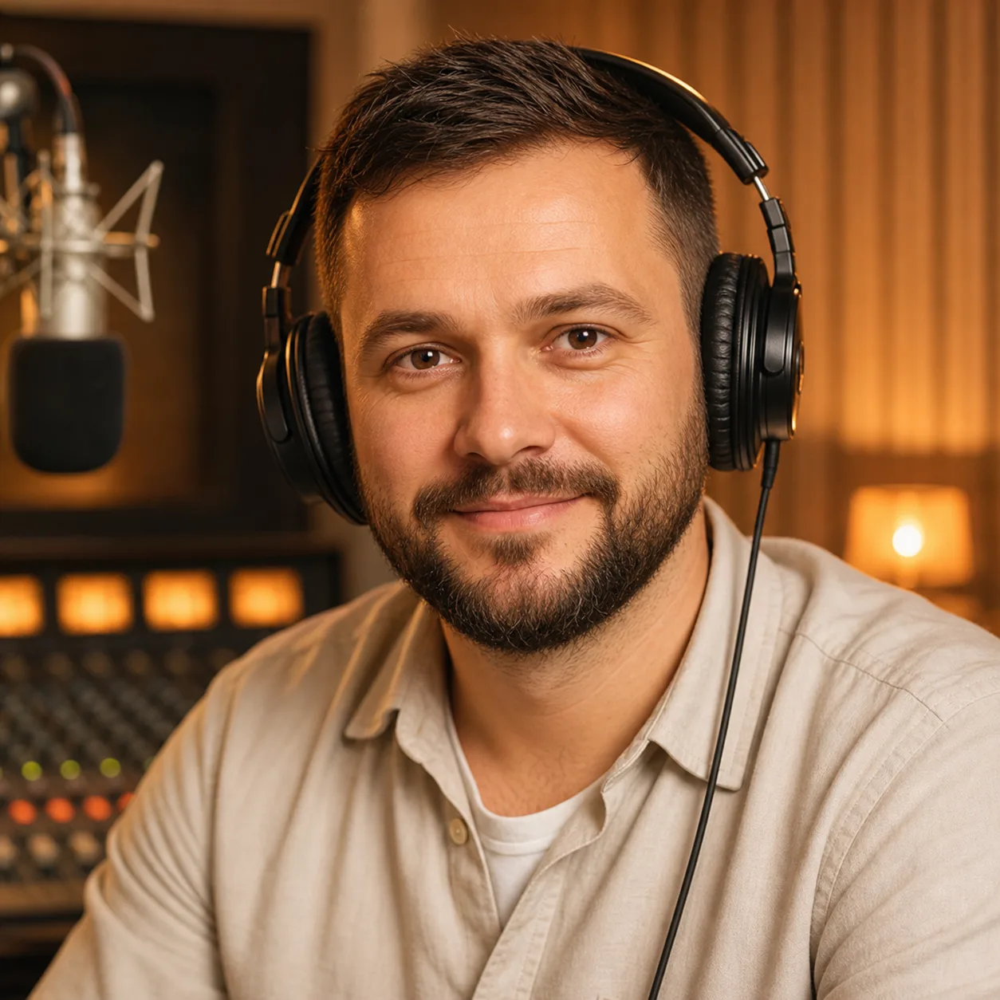

Наша ідея
Ми віримо, що радіо — це більше, ніж музика. Це голос громади, підтримка та частина дому, де б ви не були.
Radio Prywoz — перше українське інтернет-радіо в Польщі.
Ми створені, щоб об'єднувати українців за кордоном через музику, гумор, культуру та живе спілкування.

Ми віримо, що радіо — це більше, ніж музика. Це голос громади, підтримка та частина дому, де б ви не були.
Живий ефір 24/7, музичні програми, подкасти, новини, гумор та авторські передачі.
Підтримувати українську культуру, мову та традиції, створювати позитивний простір для спілкування.
Українці в Польщі та по всьому світу, які хочуть залишатися на хвилі рідного слова і гарного настрою.
Заряджає позитивом з самого ранку та дарує гарний настрій на весь день.

Відповідає за якість ефіру та створення цікавого контенту для слухачів.
Бере інтерв'ю, розповідає важливі історії та тримає зв'язок із громадою.
Стежить за якістю звуку та тим, щоб наш ефір звучав ідеально.